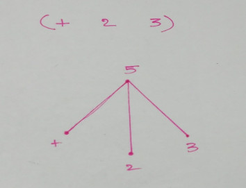
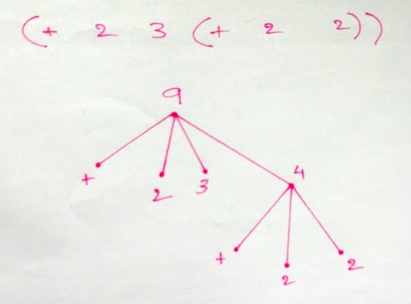

S-expressions
S-expressions or Sexprs or Symbolic Expressions are used to represented list like data. This was invented for and popularized by LISP. Lisp stands for LISt Processing.
A list looks like this (x y ... z)
A list can be made up of other lists as well. Like so (x (a b c) (d e f))
In Lisp (and any other lisps) every program is a represented as a list. In-fact this is the one and only style of writing programs in LISP and this leads to some very interesting properties of lisp programs. 1. Data and instructions (that work on the data) have similar representation within the program structure. 2. You have to pay close attention to evaluation models or how each list is evaluated. 3. The whole program can be represented as a tree.
Program Structure of Lisp
If we look at the structure of a LISP program we will notice that there is not proper structure to the code other than the usual LIST structure and everything within that language (from variables to procedure calls) are represented with the same structure. This is interesting because this is directly related to the kind of computing model this language is based on. Lisp is based on a model of computing called Lambda Calculus. It was invented by Alonzo Church.
On the other hand procedural and object oriented languages are based on a model of computing called the Turing Machine. In these languages there is some structure that lets us differentiate between what is code and what is data, but that is not the case in Lisp. Infact in Lisp code is treated as data in the form of higher order procedures.
Lisp programs are trees. In other words the lists can be represented as tree such that - Every list within a pair of ( ) is treat as a node in the tree - The very first element of every list is the first child of that node in the tree. This is the operator. - Every other element of that list is a child of that node and are the operators for that operand.
The tree of the expression (+ 2 3) will look like this

A LISP program is very easily parse-able by a computer as Trees do not need complicated rules for traversal and other operations. In-fact this sounds almost similar to the parse-tree of a Context-Free Grammar.
This is probably one of the most simplest models of evaluation. It is also very powerful. It is also recursive in nature. Let us write a basic definition of the Evaluator.
Let the Evaluator be E. It accepts an expression as input and
evaluates it. Let the expression be expr
- On receiving an expression expr evaluate the sub-expressions (using
the same model; so this is a recursive call to
E(sub_expr)where sub_expr is the sub expression) - Apply the results of the sub-lists as operands to the operator of this list.
In list the first element of any List is treated as the operator while the rest are treated as the operands.
1 2 3 4 5 6 | |
This also applied for lists that have other lists in them. Let's have a look!
1 2 | |
Let us trace what happens here. First the evaluator receives the
expression (+ 2 4 (+ 2 2)) and then it evaluates the internal list
first. Which is (+ 2 2). This expression evaluates to 4.
In the tree form this is how the above expression would look

Then the evaluator substitutes that result to the actual expression
before continuing on with the evaluation. So now the expression looks
like this (+ 2 4 4) and then we get the final answer.
Evaluation Strategies
Lisp uses an Eager evaluation strategy. This is also known as Strict Evaluation or Applicative evaluation. In this strategy all the operands are evaluated first before applying them to the function.
In lisp this is the only structure that we have. So conditional branching (if-else, case). The if-construct in LISP looks like this.
(if (expression) (expression1) (expression2))
Now the if macro is special because it does not follow the normal evaluation strategy i.e. all the three expressions expression, expression1 and expression2 are not evaluated before the procedure is applied. In this macro only the first expression (expression) is evaluated first and if it evaluates to be true (#t) then expression1 will be evaluated. Otherwise expression2 will be evaluated.
1 2 3 4 5 6 | |
What happens when we evaluate the last expression ? Nothing
spectacular. We just get the value 0 which is what it is supposed to
do. We get this answer only because LISP uses normal order evaluation
(lazy evaluation) for the if construct. If like the default strategy
it used applicative order evaluation then both the 0 and the (recursive
(- x 1)) would be evaluated before calling the procedure and that
would lead to an infinite loop. But the if-constructs uses Normal order evaluation or non-strict evaluation.
My next program will illustrate this. For that we will define a
new-if procedure that will do exactly what if does.
1 2 3 | |
This is the new-if procedure. Let us use this in our previous program.
1 2 3 4 5 6 | |
What happens now ?
NOW the thing goes into a spectacular infinite loop. That is because the new-if procedure will be evaluated using the applicative order strategy. Thus all the operands will be evaluated before the new-if procedure is called; and recursive-new has a call to itself. So in the end it all splatters exceptionally well.
P.S. I have written this post based on my own experience which is a very very limited one. I do not claim that what I have just said is the ultimate truth or the only thing out there. My short life and my shorter experience with LISP is not nearly enough to cover the full depth and breadth of LISP